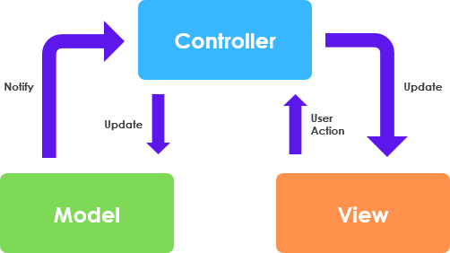

Game of Life & Powder Game
コナウェイの生命ゲーム & パウダーゲーム
ゲームデモ
ダウンロード
ダウンロードリンク
ユーザー向けの説明
このアプリケーションは、2つの人気ゲーム「パウダーゲーム」とジョン・ホートン・コンウェイの「ライフゲーム」に基づいています。
パウダーゲームは物理をテーマにしたゲームで、画面上にさまざまな粒子を配置し、それらが互いに作用し合いながら重力に反応する様子を観察することができます。一方、ライフゲームはシンプルなシミュレーションで、各世代において細胞の成長や死が隣接する細胞の有無によって決定されます。このゲームが「ライフゲーム」と呼ばれるのは、現実世界における過密化や過疎化の影響をシミュレートするためです。
パウダーゲームのデモ
ライフゲーム
これらの2つの概念を組み合わせることで、楽しく満足感のある粒子シミュレーションゲームを作成しました。このゲームでは、画面に砂を描き、それが砂丘に落ちていく様子を心地よく眺めることができます。さらにライフゲームのルールを組み込むことで、砂の粒子が有機的でほとんど生命のように振る舞い、その動きや形状が予測不可能になります。
このアプリケーションでは、粒子の挙動を調整して変化を観察するための5つのコントロールを提供しています：
- 画面上のすべての粒子を削除するリセットボタン。
- 粒子物理のオン/オフを切り替えるトグルボタン。
- レンダリングサイクルごとにライフゲームが処理する進化の世代数を変更するスライダー。
- カーソルサイズを調整するスライダー。
- シミュレーション速度を変更するスライダー。値が小さいほど、フレームの再レンダリングが速くなります。
開発者向けの説明
これら2つの概念を組み合わせるには、2種類の異なるアルゴリズムが必要です。画面上の各ピクセルは、2次元配列内の1つのセルを表しています。画面上に描画すると、対応する配列のセルがアクティブになり（値を1に設定）、各サイクルで粒子の次の位置が計算されます。
(x, y + v), if A[x, y + v] = 0
(x + R, y + v), if A[x, y + v] ≠ 0 and A[x + R, y + v] = 0
(x, y), if A[x, y + v] ≠ 0 and A[x + R, y + v] ≠ 0
- (x, y): 砂粒の現在の位置（グリッド内）
- v: 固定された垂直速度（ピクセル単位の時間ステップ）
- A[x, y]: セルの状態（0 = 空、1 = 占有）
- R: ランダムな2値変数（R ∈ {-1, 1}）、R = -1 は左に流れ、R = 1 は右に流れる
粒子が下に移動できない場合（下の位置が何かで占有されている場合）、実際の砂のようにランダムに左または右に流れます。また、ライフゲームをシミュレートする必要があるため、各砂粒子の次の位置を計算した後に、そのセルの生存している隣接セルの数を数えます。この数に基づいて、次の世代でそのセルが生存するか死ぬかを決定します。
1, もし C(x, y) = 0 かつ N(x, y) = 3
1, もし C(x, y) = 1 かつ (N(x, y) = 2 または N(x, y) = 3)
0, もし C(x, y) = 1 かつ (N(x, y) < 2 または N(x, y)> 3)
0, もし C(x, y) = 0 かつ N(x, y) ≠ 3
ここで:
- C(x, y): セル (x, y) の現在の状態（1 = 生存、0 = 死亡）
- N(x, y): セル (x, y) の周囲に生存しているセルの数（隣接する8つのセルを考慮）
ライフゲームのルール:
- 生存: 生存しているセルは、隣接する生存セルが2つまたは3つの場合に次の世代でも生存します。
- 死亡: 生存しているセルは、隣接する生存セルが2未満または3を超える場合、次の世代で死亡します。
- 誕生: 死んでいるセルは、隣接する生存セルがちょうど3つの場合、次の世代で生まれます。
クラス分割の説明
このプログラムは、MVC（モデル・ビュー・コントローラー） デザインパターンに従っています。モデル はアプリケーションのロジックを担当し、すべてのデータを保持します。ビュー はユーザーインターフェースを管理し、画面に情報を表示し、ユーザーとのインタラクションを処理します。コントローラー はモデルとビューの間の仲介役を果たし、状態の変更やビューの再描画を管理します。
このデザインでは、モデル クラスは2次元配列を保持し、ロジックに関連するすべてのアルゴリズムを実行します。ビュー クラスは描画やレイアウト管理を担当し、パネルやフレームの管理、コントロールを行います。コントローラー は、ビューを再描画すべきタイミングを管理し、タイマー、モデル、ビュー をすべて保持しています。
ビュー または モデル が互いのメソッドやフィールドにアクセスする必要がある場合、必ず コントローラー を通じて行われます。コントローラー は、モデル と ビュー の相互作用が調整され、アプリケーションが疎結合でモジュール化された状態を保つことを保証します。